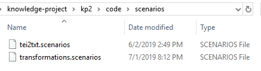

Import a Scenario
Learn how to import an existing xsl transformation scenario into an OCR Project.
The eb-docx2tei scenario is stored in the code directory and is easily imported into any ocr-project.
-
Open the Configure Transformation Scenario(s) window.
 .
.
-
Select the Settings wheel in the upper-right of the
window, and click on Import scenarios.
-
In the dialogue box that opens, browse to outputs/code/scenarios and select
transformations.scenarios.

-
The Import scenarios window opens. Select the transformation
scenario(s) you want to import.
-
If a copy already exists, go ahead and replace it.

- Continue with the steps in Transform DOCX to TEI.